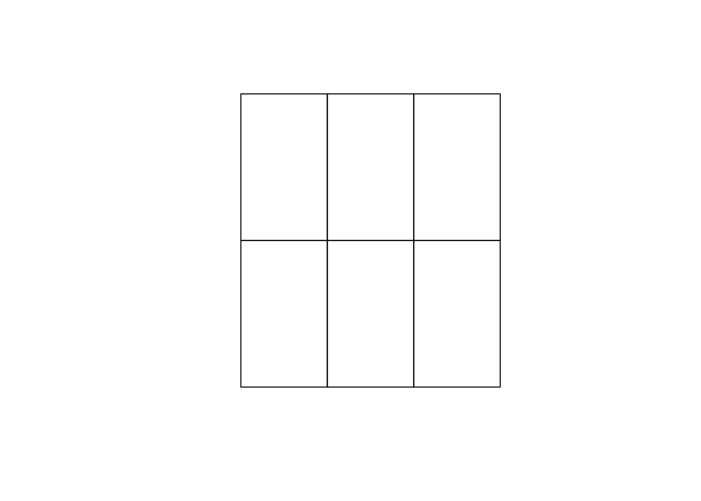
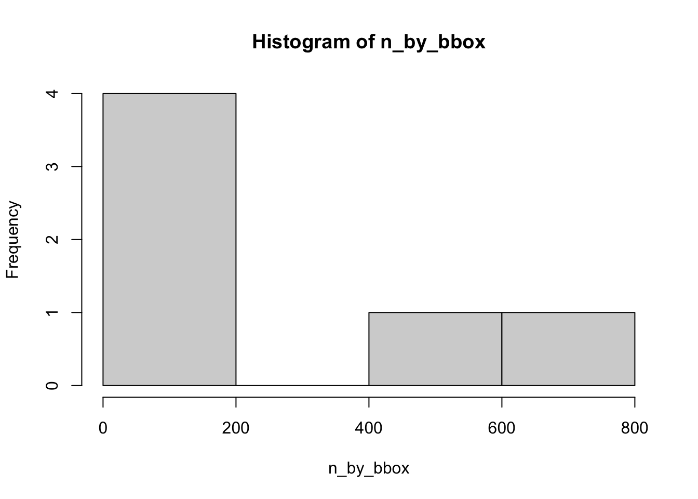

wikimapR, an R package for importing Wikimapia data as Simple Features via API ================

wikimapR is an R package for accessing the raw vector data from Wikimapia via official Wikimapia API. Map data is returned as Simple Features (sf) objects with some of the object details included as nested lists.
WARNING: the package may NOT work for now because of the breaking change in the Wikimapia API. More details at https://github.com/e-kotov/wikimapR/issues/2. Using ‘example’ API key does not seem to work, however everything seems to be working with private API keys.
This package is at a VERY alpha stage. Provided ‘as is’. Use with caution.
You may also want to try a similar package for Python.
Installation
To install:
# Install the development version
# install.packages("remotes")
remotes::install_github("e-kotov/wikimapR")To load the package and check the version:
library(wikimapR)
packageVersion("wikimapR")
#> [1] '0.1.2'Load additional packages:
Usage
Set your API key. There is the API key ‘example’ that’s used by the testing page https://wikimapia.org/api/?action=examples. It is limited to one request every 30 seconds. Get your own API key at https://wikimapia.org/api/?action=my_keys to get up to 100 requests in 5 minutes.
# change to your own key
set_wikimapia_api_key("your_key")
# set_wikimapia_api_key("example) # use 'example' key with 1 request per 30 seconds rate limitChoose a bbox
Have a look at https://boundingbox.klokantech.com and choose a bounding box. For example: -1.617122,53.764541,-1.467519,53.831568 for Leeds and it’s surroundings.
bbox <- c(-1.669629,53.739816,-1.422465,53.869239) # LeedsGet the number of objects in this bounding box
Use box API function to get the number of features in your area of interest.
wm <- wm_get_from_bbox(x = bbox, get_location = FALSE, meta_only = TRUE)
wm$found
#> [1] 1320Now we know how many objects we have in the bounding box.
There are page and count parameters in the Wikimapia API, but you cannot request objects from a bounding box beyond 10 000 no matter how high you set the page parameter. So you have to subdivide the large bounding box that you have into smaller bounding boxes with a maximum of 10 000 objects each.
Subdivide the bounding box into smaller ones
subdivide_bbox() subdivides a large bounding box into smaller ones and returns sf polygons, or bbox objects or both. It is good for large areas with defaults tuned to cities like Moscow.
small_bboxes <- subdivide_bbox(x = bbox, bbox_cell_size = 0.1, return_bbox_or_sf = "both")
#> 6 bounding boxes created with approximate cell size of 6577x11120 meters.
plot(small_bboxes$sf$geometry)
In this example the bounding box cell size is in degrees (need to somehow fix that to work with meters across the globe). Default of 0.045 degrees is reasonably large, roughly equivalent to 2845x5010 meters. It has proved to fit < 10 000 objects per cell in Moscow, where the density of objects is quite high. For less object-dense cities you may be able to get away with larger grid of bounding boxes.
This is not ideal and it would be more convenient to create this subdivision using precise metric, but this will do fine for now.
Check then number of objects per cell
Just to be sure that every bounding box that we generated has <= 10 000 objects, let us query all the bounding boxes. For the current example with 6 it will take about 3 minutes, as with “example” API key the cool-down is about 30 seconds.
# get objects in every bbox, but no need to get the location for now
objects_in_bboxes <- small_bboxes$bbox %>% purrr::map(
~wm_get_from_bbox(x = .x, get_location = FALSE), .progress = T )Now we look at the histogram of the number of objects in the small bounding boxes and the maximum value:
n_by_bbox <- objects_in_bboxes %>% purrr::map_int(~ .x$meta$found) # extract the number of found objects for every bounding box
max(n_by_bbox)
#> [1] 718
hist(n_by_bbox)
Since the maximum is well within 10 000, we can proceed to collect the objects IDs and then download attributes for individual features. We have to download the detailed objects features one-by-one as box API only returns object ID, name and URL. So the strategy for getting all object details is to make a list of object IDs using box API and then use place.getbyid.
Create a list of IDs to fetch
id_list <- objects_in_bboxes %>%
purrr::map(~ .x$df$id) %>% # pull object IDs from individual bbox query results data.frames
unlist() # bind together
str(id_list)
#> chr [1:461] "1869857" "25258348" "14406815" "25257158" "25259631" ...
head(id_list)
#> [1] "1869857" "25258348" "14406815" "25257158" "25259631" "14406851"Now we have a list of 461 object IDs that we want to get the details for.
Get detailed data for Wikimapia objects
Let’s take just 3 first objects for this example. It will take up to 1.5 minutes to fetch them with all the details using the ‘example’ API.
short_list <- id_list[1:3]
wm_objects <- wm_get_by_id(ids = short_list)We have the objects!
str(wm_objects, max.level = 1, nchar.max = 50)
#> Classes 'sf' and 'data.frame': 3 obs. of 25 variables:
#> $ id : int 1869857 25258348 14406815
#> $ object_type : int 1 1 1
#> $ language_id : int 0 0 0
#> $ language_iso : chr "en" "en" "en"
#> $ language_name : chr "English" "English" "English"
#> $ urlhtml : chr "<a class=\"wikimapia-link\" href="| __truncated__ "<a class=\"wikimapia-link\" href="| __truncated__ "<a class=\"wikimapia-link\" href="| __truncated__
#> $ title : chr "Pudsey" "Farnley" "Morley"
#> $ description : chr "Pudsey is a market town in West Y"| __truncated__ "District of the city of Leeds." "The small West Yorkshire town of "| __truncated__
#> $ wikipedia : chr "http://en.wikipedia.org/wiki/Pudsey" "http://en.wikipedia.org/wiki/Farnley,_Leeds" "http://en.wikipedia.org/wiki/morley"
#> $ is_building : logi FALSE FALSE FALSE
#> $ is_region : logi FALSE FALSE FALSE
#> $ is_deleted : logi FALSE FALSE FALSE
#> $ parent_id : chr "0" "0" "0"
#> $ x : chr "-16639084" "-16233262" "-15956783"
#> $ y : chr "537924232" "537853660" "537441159"
#> $ pl : num 32078 25832 22310
#> $ is_protected : logi FALSE FALSE FALSE
#> $ user_id : chr "904949" "904949" "539863"
#> $ user_name : chr "Timea" "Timea" "jagpalpur"
#> $ date : chr "1427742742" "1427742836" "1258319330"
#> $ deletion_state : chr "FALSE" "FALSE" "FALSE"
#> $ is_in_deletion_queue : chr "FALSE" "FALSE" "FALSE"
#> $ is_in_undeletion_queue: chr "FALSE" "FALSE" "FALSE"
#> $ details :List of 3
#> $ geometry :sfc_POLYGON of length 3; first list element: List of 1
#> ..- attr(*, "class")= chr [1:3] "XY" "POLYGON" "sfg"
#> - attr(*, "sf_column")= chr "geometry"
#> - attr(*, "agr")= Factor w/ 3 levels "constant","aggregate",..: NA NA NA NA NA NA NA NA NA NA ...
#> ..- attr(*, "names")= chr [1:24] "id" "object_type" "language_id" "language_iso" ...We can explore the attributes
names(wm_objects)
#> [1] "id" "object_type" "language_id"
#> [4] "language_iso" "language_name" "urlhtml"
#> [7] "title" "description" "wikipedia"
#> [10] "is_building" "is_region" "is_deleted"
#> [13] "parent_id" "x" "y"
#> [16] "pl" "is_protected" "user_id"
#> [19] "user_name" "date" "deletion_state"
#> [22] "is_in_deletion_queue" "is_in_undeletion_queue" "details"
#> [25] "geometry"Most of the details are currently in a nested list for every object
You can use purrr and/or rlist packages to pull any of the details from these nested lists.
str(wm_objects$details[[1]], max.level = 1)
#> List of 5
#> $ tags :List of 1
#> $ photos : list()
#> $ comments : list()
#> $ location :List of 15
#> $ availableLanguages:List of 1To-Do List
Rewrite
subdivide_bbox()to accept metric values for bbox dimensions (not critical, but may be useful for other projects)Create a few more helper functions to abstract the user from the calls to
purrrfor simple things like getting the number of found objects, or for getting number of objects per bounding box (see examples above in the Usage section)Create a hidden environment variable for storing API key and using it automatically in the package functions
Implement the rest of the Wikimapia API functions
Fix bugs if any
Make code more robust
Write unit tests
Your suggestions are welcome via GitHub issues for this package
Submit the package to CRAN someday..?
Citation
To cite wikimapR in publications, please use:
Kotov (2018). wikimapR: Import Wikimapia Data as Simple Features via API. DOI: 10.5281/zenodo.3459878. https://github.com/e-kotov/wikimapR
A BibTeX entry for LaTeX users is:
@Manual{,
title = {wikimapR: Import Wikimapia Data as Simple Features via API},
author = {Egor Kotov},
doi = {10.5281/zenodo.3459878},
year = {2018},
url = {https://github.com/e-kotov/wikimapR},
}License
The MIT License (MIT) + License File
Copyright © 2018 Egor Kotov
Permission is hereby granted, free of charge, to any person obtaining a copy of this software and associated documentation files (the “Software”), to deal in the Software without restriction, including without limitation the rights to use, copy, modify, merge, publish, distribute, sublicense, and/or sell copies of the Software, and to permit persons to whom the Software is furnished to do so, subject to the following conditions:
The above copyright notice and this permission notice shall be included in all copies or substantial portions of the Software.
THE SOFTWARE IS PROVIDED “AS IS”, WITHOUT WARRANTY OF ANY KIND, EXPRESS OR IMPLIED, INCLUDING BUT NOT LIMITED TO THE WARRANTIES OF MERCHANTABILITY, FITNESS FOR A PARTICULAR PURPOSE AND NONINFRINGEMENT. IN NO EVENT SHALL THE AUTHORS OR COPYRIGHT HOLDERS BE LIABLE FOR ANY CLAIM, DAMAGES OR OTHER LIABILITY, WHETHER IN AN ACTION OF CONTRACT, TORT OR OTHERWISE, ARISING FROM, OUT OF OR IN CONNECTION WITH THE SOFTWARE OR THE USE OR OTHER DEALINGS IN THE SOFTWARE.